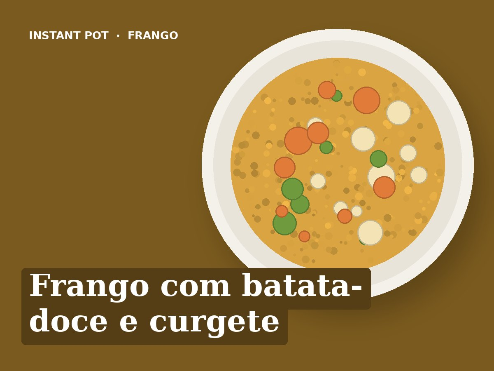

Frango com batata-doce e curgete
Idioma: português de Portugal (pt-PT). Esta receita está escrita em português de Portugal. Ao importar, manter o título, os ingredientes e todos os passos em português, sem traduzir para inglês. Usar unidades métricas (g, ml, °C).
Ingredientes
- 600 g de peito ou coxas de frango sem pele
- 2 batatas-doces (cerca de 500 g)
- 1 curgete
- 1 cebola
- 2 dentes de alho
- 250 ml de água
- Oregãos ou tomilho
- 1 colher de sopa de azeite
- Sal q.b.
Preparação
- Saltear (Sauté): Cebola e alho no azeite, 2 minutos. Deitar a água e raspar o fundo.
- Juntar o frango em pedaços grandes e a batata-doce em cubos de 3 cm. Temperar com sal e ervas.
- Curgete em rodelas grossas por cima, sem mexer.
- Pressão (Pressure Cook): Pressão alta, 8 minutos.
- Libertação natural 5 minutos, depois abrir a válvula.